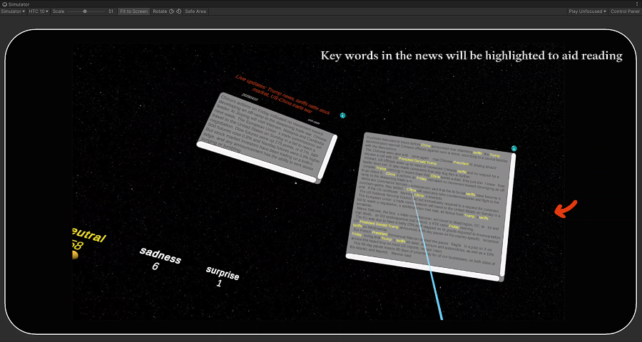

News Summary Dynamic Carousel and Assisted Reading
Introduction
This feature module allows users to select any country using the right-hand controller ray and press the B button to trigger a dynamic visualization analysis of the sentiment of news related to that country during the current time period.
The system will filter all news articles for that country during the selected time period and generate two emotion spheres for each article (corresponding to the Top 1 and Top 2 emotion tags), automatically stacking them into one of the seven emotion categories (joy, anger, sadness, fear, surprise, disgust, neutral) in the bar chart. The spheres simulate real physical bouncing and automatically adhere to the columns, forming a three-dimensional emotional distribution histogram with animated transitions.
The emotion bar chart supports the simultaneous generation of multiple country instances, allowing users to freely drag, rotate, and compare them spatially to help identify similarities and differences in news sentiment trends across multiple countries.
FEffect demonstration
Core Design
News Summary Carousel Logic
The StartLoop(List<NewsDataLoader.NewsEntry> entries) method initiates the news summary carousel, filters news entries matching the clicked emotion tag, randomly selects news for display, and alternates between the left and right anchor points (anchorLeft, anchorRight) based on the axis direction. Each news summary includes the title (emotion-mapped color), news source, publication time, and brief content.
Keyword Highlighting and News Content Reading
The HighlightKeywords(string content, NewsDataLoader.NewsEntry entry) method searches for keywords in news entries and replaces them with a highlighted style (yellow background) to help users quickly grasp important information in the news.

UI Notes
-
When the user hovers over an emotion label on an emotion bar chart and presses the
Abutton, it triggers the news summary carousel panel for that emotion category, which alternates left and right and slowly scrolls within the field of view. -
Clicking the button on the summary panel opens the detailed news panel, displaying the full news content with keywords highlighted to assist reading.
-
Clicking the close button in the top-right corner of the detailed panel exits reading mode and returns to the original summary carousel process, allowing users to continue browsing more news summaries.
-
Users can manually close all current summary panels and terminate the news summary carousel process using the right controller
Bbutton, enabling quick interface cleanup.
Right Joystick A Button Triggers Summary Carousel
Click the “Details” Button on the Summary Panel
Close the Detailed News Panel to Return
Right Controller B Button to Close the Summary Panel
News Summary Panel Field Description
| Control | Content |
|---|---|
summaryPanel (prefab) |
News summary panel prefab, displays the news title (with emotion-based color), publication time, source, and summary content, along with a Details button. |
NewsContent (prefab) |
Full news content panel prefab, shows the complete text and supports keyword highlighting for assisted reading. |
anchorLeftanchorRight |
Anchor points for summary panels on the left and right, used to alternately spawn panels and enhance spatial reading experience. |
Text label components |
Display various text contents, including TitleText, SourceText, SummaryText, etc. |